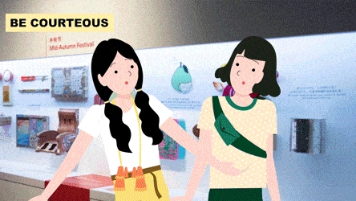
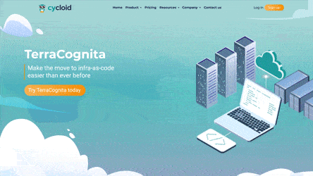

sky portal (2019) – an augmented reality supernatural-themed experience at Gardens by the Bay, Singapore

livingspace (2018) – an interactive and immersive gallery to reveal the complex planning process of Housing Development Board (HDB), Singapore

oue (2017) – an interactive circus-themed spectacle projected on glass at OUE Downtown Gallery, Singapore

zen pond (2020) – a personal interactive KOI-fish-pond-themed project controlled by TouchOSC on the phone
.animation
vskh (2020) – a full-length 60-minute crowdfunding Vietnamese-history-themed animation to be released on December 2020 in Vietnam
chope (2020) – an infographics video about new safety policies during Covid-19 pandemic for Chope, an online reservation app

sccc (2020) – an infographics video about proper etiquettes inside the gallery for Singapore Chinese Culture Center (SCCC), Singapore
temasek (2017) – an infographics video about Real Estate Investment Trust (REITs) for Temasek, Singapore

manmade (2015) – an underwater visual effect short film about the journey of a boy into the deep sea
space (2014) – a short animation about the mutual relationship between human and nature sharing the same space

mindblown (2014) – an animated series based on the Mindblown-themed illustrations for Kult3D Gallery, Singapore
.demo reels and others

cycloid (2020) – a website design and video concept demo for Cycloid, a tech start-up based in Paris, France
.research
virtual museums (2020) – a master's thesis about the performance of virtual museums during the Covid-19 crisis
vskh (2020) – a full-length 60-minute crowdfunding Vietnamese-history-themed animation to be released on December 2020 in Vietnam
chope (2020) – an infographics video about new safety policies during Covid-19 pandemic for Chope, an online reservation app
sccc (2020) – an infographics video about proper etiquettes inside the gallery for Singapore Chinese Culture Center (SCCC), Singapore
temasek (2017) – an infographics video about Real Estate Investment Trust (REITs) for Temasek, Singapore
manmade (2015) – an underwater visual effect short film about the journey of a boy into the deep sea
space (2014) – a short animation about the mutual relationship between human and nature sharing the same space
mindblown (2014) – an animated series based on the Mindblown-themed illustrations for Kult3D Gallery, Singapore
cycloid (2020) – a website design and video concept demo for Cycloid, a tech start-up based in Paris, France
.research
virtual museums (2020) – a master's thesis about the performance of virtual museums during the Covid-19 crisis
virtual museums (2020) – a master's thesis about the performance of virtual museums during the Covid-19 crisis